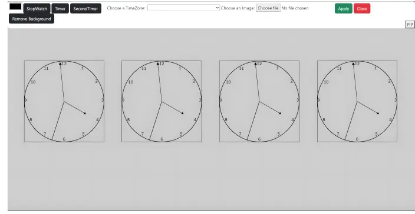
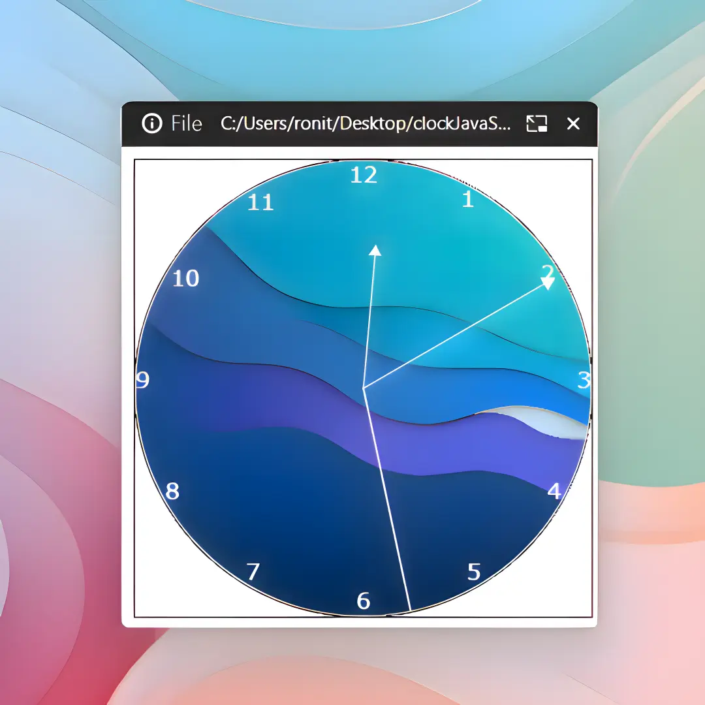
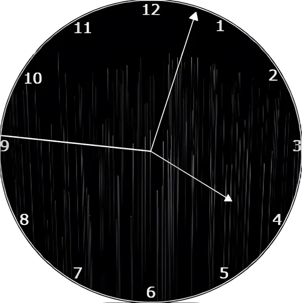

Everything you need to get the most out of ClockCraft — from setup to advanced customization.
Design Your Perfect Clock:
Step-by-step guides to customize colors, hand styles, and backgrounds so every clock feels uniquely yours.
World Time at a Glance:
Clear instructions for assigning any IANA timezone to each clock — keep track of multiple cities simultaneously.
Timer & Stopwatch Mastery:
Learn how to set countdowns and measure elapsed time with precision, right from the settings panel.
Picture-in-Picture Mode:
Pop any clock into a floating overlay that stays visible across all your tabs and windows — zero interruptions.
Ready to dive deeper? Click below to open the full documentation:
Build Your Clock:
Open the settings panel and pick a hand color that matches your style — changes apply instantly with no reload.
Set a custom background image to give each clock its own personality and visual context.
Set Your Timezone:
Choose from every IANA timezone — your clock updates the moment you apply. Run multiple clocks across different regions side by side.
Timer & Stopwatch:
Start a countdown or a stopwatch directly from the settings bar — no extra apps needed.
Picture-in-Picture:
Tap PiP to float any clock in its own persistent window — it stays on top while you work in other tabs.


Minimal, Customizable Design:
A clean canvas-rendered analog clock with hand color, background image, and two themes — light and dark.
Global Timezone Support:
Assign any IANA timezone to any clock. Run four world clocks simultaneously and stay in sync globally.
Built-in Timer & Stopwatch:
Count down or count up without leaving the page — your timekeeping tools are always one click away.
Picture-in-Picture Mode:
Float any clock above your other windows with one click — always visible, never in the way.
ClockCraft is an open-source clock app built with vanilla JavaScript and Canvas. Run multiple analog clocks across different time zones, tweak every detail from hand color to background image, and pop any clock into a floating Picture-in-Picture window — all with a minimal, theme-aware interface that feels at home on any setup.
Welcome to ClockCraft
Time, Your Way.